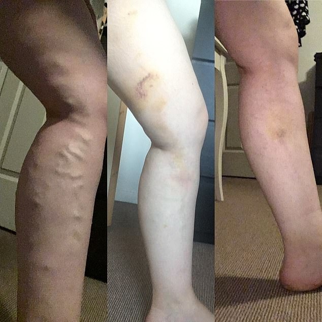
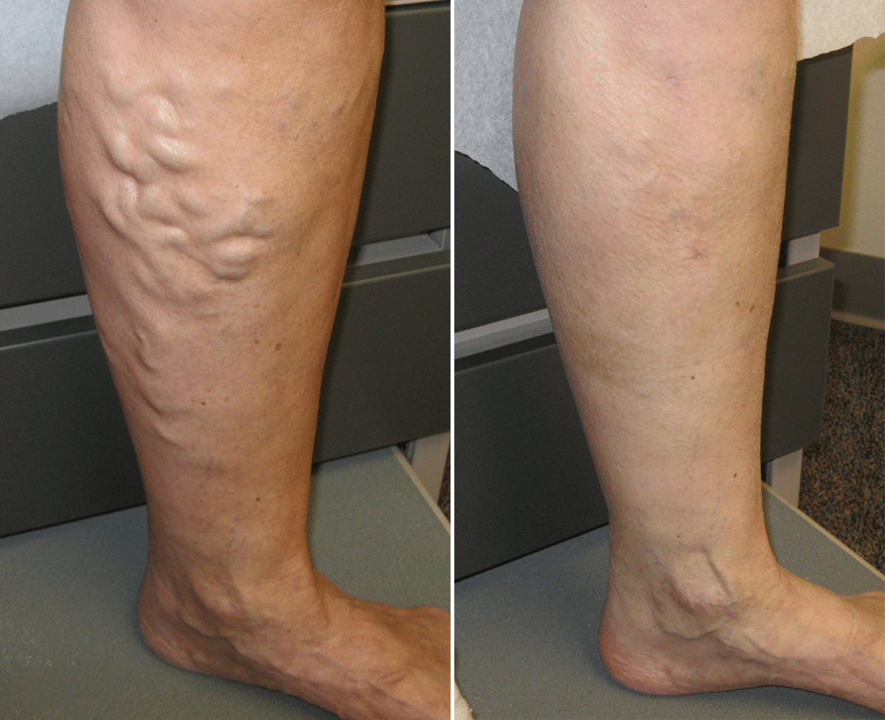

![]()
Curare le vene varicosi senza operazione è reale?
Dopo l’articolo sulle vene varicose abbiamo ricevuto più di 1500 lettere con domande su questo malessere. A diverse di queste risponderà Davide Lugano, noto medico del Consiglio Europeo.
Commenti del dottor Lugano:
Davide Lugano — Professore, primario della cattedra di malattie nervose e neurochirurgia dell’Università Medica.
«Nel 90% dei casi non si può evitare la varicosi»
Uno stile di vita sedentario può rovinare anche le gambe sane. Il sangue sale nelle vene, correndo verso il cuore e i polmoni. A causa della gravità e della costrizione delle vene, il fluido tende a ristagnare o bloccarsi. In modo che il sangue non si accumuli negli arti, ci sono valvole nelle vene che si aprono nella direzione del movimento del sangue e si chiudono in modo da non lasciarlo tornare. Quando le valvole funzionano male e il sangue scorre nelle vene, i vasi non lo contengono, si allungano e sporgono sopra la pelle formando le vene varicose.
L’eredità è alla base della varicosi. Non è la malattia che si passa, ma la debolezza delle pareti delle veneì. Anche se per i vostri genitori è sempre andata bene, le pareti delle vene deboli potrebbero esservi state tramandate da qualsiasi altro parente.
Le vene varicose latenti sono terribili in quanto non appaiono esternamente e potete facilmente ignorare i primi stadi delle vene varicose. Se ciò accade, potete prendere la medicina sbagliata per tutta la vita, pensando che vi si siano di nuovo stirati o contratti i muscoli.
Se a fine giornata sentite le gambe pesanti, gonfie e poco sensibili, allora siete di fronte ai primi sintomi di varicosi.
Non bisogna mai aspettare per andare dal dottore. E se il medico vi dice che va tutto bene fareste meglio a fare nuovamente le analisi o a cambiare dottore.
La varicosi è la via principale alla formazione di trombi e tromboflebite. Il trombo staccandosi può provocare un infarto, un ictus o un’embolia arteriosa. Trattare la varicosi come roba da poco può rivelarsi fatale. La congestione delle vene porta a cambiamenti cicatriziali e ulcere che possono degenerare anche in tumori maligni.
Il principio di cura di qualsiasi varicosi (ereditaria, nascosta, avanzata) è praticamente sempre lo stesso. Si consiglia di fare costantemente esercizi per le gambe, fare una doccia di contrasto, visitare un medico ogni mese e usare .
aiuta a prevenire le operazioni, arresta lo sviluppo della malattia ed agisce sulla causa della malattia. Durante gli studi clinici, il 99,6% dei partecipanti è stato guarito dai sintomi delle vene varicose, si è sbarazzato dei nodi venosi e delle 'stelle' vascolari. Per tutto questo tempo, nessun singolo farmaco ha raggiunto la stessa percentuale d’efficacia di .
Ultimamente sto notando che vari ciarlatani giocano con la salute dei pazienti vendendo 'preparati' contro la varicosi. Per questo nello scegliere vi chiedo di evitare i falsi. Ora nel mercato farmaceutico è pieno di truffatori che sono pronti a fare di tutto e vendere qualsiasi cosa. Fate attenzione: il preparato va presso solo sul sito ufficiale.
Cari lettori, non arrivate ad operarvi, prendetevi cura delle vostre gambe!
Su richiesta del dottore, a nome della redazione vi alleghiamo un link al sito ufficiale del produttore .
- Sbilancio ormonale: come prevenirlo e sconfiggerlo
- check up medico: cos’è e a cosa serve
- cosa mangiare per mantenere i vasi sanguigni puliti
- Salute in equilibrio: come costruirsi una carriera senza danneggiare la salute
Foto: Getty Images
-
 Perché il principe George non può diventare re (E cosa c’entrano Garry e Megan)
Perché il principe George non può diventare re (E cosa c’entrano Garry e Megan)
-
Come le persone normali: Garry e Megan hanno portato Archie al parco
-
Tutto per la corona: Il principe Filip e la sua più grande rinuncia
-
Per la mamma con amore: come Jacques e Gabriella si sono congratulati con il compleanno della Principessa Charlene
-
Da cortigiana a principessa assassina: come Marguerite Alibert ha ingannato il mondo intero
Grazie per aver pubblicato la mia lettera! Io ho iniziato ad utilizzare e mi ha veramente aiutato. Guardate voi stessi:))
La settimana scorsa ho ricevuto una risposta dal dottore, ha risposto alla mia lettera. Sono molto felice. Ho la varicosi ereditaria e ho deciso di ordinare . Lo utilizzo da pochi giorni, e la sera ho le gambe che non si gonfiano più. Ottimo!
Mia moglie aveva le vene varicose. Se n’è andata due anni fa. Un coagulo di sangue si è staccato da lei e non sono riusciti a salvarla. Quando ho notato che anche nostra figlia adulta stava sviluppando le vene varicose, l'ho portata subito da vari dottori, ma tutti hanno detto che non si può fare nulla con l'ereditarietà. Qualche mese fa ho ordinato . Ha aiutato la mia ragazza! Non ho avuto il tempo di salvare mia moglie, ma mia figlia è ancora viva
Anche io ho la varicosi latente. Ho ordinato questo preparato, magari mi aiuta…
Mi ha aiutato!! È bastato un ciclo di cura e sono nuovamente in piedi
Ho sempre sofferto di varicosi. Che gran ficata . Costa poco, e il risultato lascia a bocca aperta
Passo molto tempo al pc, con le gambe incrociate. Poi ho iniziato a notare che le mie gambe sembravano due cuscini gonfi. Non attribuivo alcuna importanza a questo e sono andata dal medico solo quando le vene erano già uscite fuori. Il dottore non ha detto nulla di confortante, ma il dottore qui mi ha risposto dettagliatamente in una lettera di risposta alla mia e mi ha consigliato di provare . Sono stata piacevolmente sorpreso dal prezzo e dall'effetto del preparato. Letteralmente già durante il ciclo di cura ho iniziato a sentirmi meglio
Grazie dottore! Le mie gambe sono nuovamente belle ed in salute! ;)
